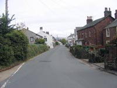
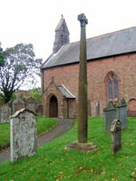
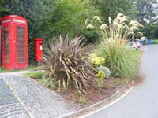

Gosforth Tourist Information
The village of Gosforth stands a few miles inland of Cumbria's West Coast and close to one of the finest collections of scenic beauty to be found anywhere. Here is the breathtaking grandeur and solitude of the wild remote valleys and woodlands of Wasdale and Eskdale together with Wastwater, Englands deepest lake, the mighty fell of Great Gable, and Englands highest mountain of Scafell Pike. It is an unspoiled adventure ground for walkers, climbers, cyclists, anglers, artists and photographers. St. Marys Church stands a little way from the village centre. The 4 metre high Viking Cross standing in the grounds is one of the tallest in England and estimated to have been carved around 940 A.D. Within the church are two 10th. Century Hogback tombstones recovered during digging around the buildings foundations, shaped as “houses of the dead”, and used to cover the graves of important Norse chieftains. Other items of historical interest are carvings and a Chinese iron bell. The bell, standing on the sill of the western window, was captured at the Anunghoy Fort on the Canton River by Captain Sir Humphrey Le Fleming Senhouse on February 26, 1841. Visitors to Gosforth have a good choice of accommodation categories from hotel, guest houses, bed and breakfasts, self-catering, caravans and camping. Gosforth is an all round centre for exploration where, come rain or come shine, the beauty of the area and its appeal remains constant. Shops and amenities: Nearest Doctor Nearest Dentist Annual Events to look out for Useful websites. |


 |
Attractions around Gosforth area |
La'al Ratty Railway
A 15 inch narrow gauge railway transporting passengers through 7 miles of the beautiful Eskdale Valley.
www.ravenglass-railway.co.uk
See also “Walks from Ratty” published by the Railway Company and detailing 10 walks from points along the route by Alfred Wainwright.
Muncaster Castle and grounds
Hardknott Roman Fort
Well defined remains of the fort constructed between AD 120 and AD138 standing on the upper reaches on the Eskdale side of the steep winding Hardknott Pass. (often impassable by car during winter months)
Eskdale Corn Mill
One of the few remaining working corn mills and the only one in Cumbria. Open April-September.
Stanley Force Ghyll Waterfall
A spectacular cascade close to the village of Boot.
The Solway Coast
An Area of Outstanding Natural Beauty.
|

Gosforth Food and Drink |
Gosforth Transportation |
Gosforth Taxis.
Nearest Rail Station is Seascale on the Barrow-Whitehaven-Carlisle Line. Enquiries 0845-748-4950.
Bus Services on the Gosforth-Seascale-Whitehaven Route. Enquiries 0870-608-2608.